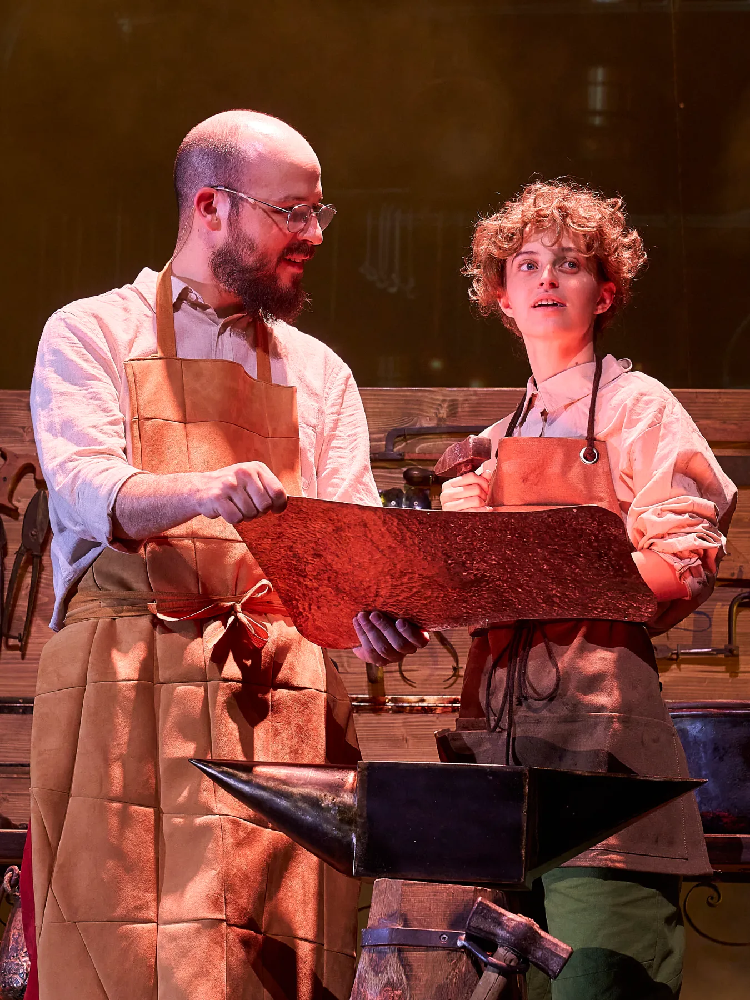
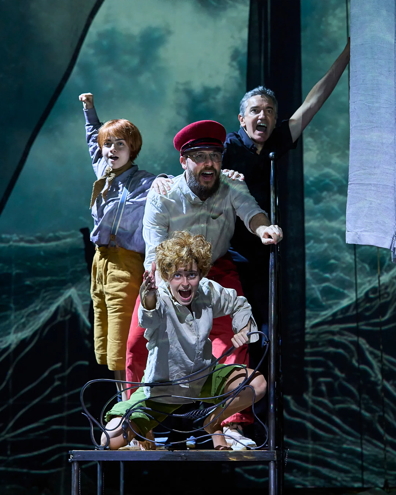
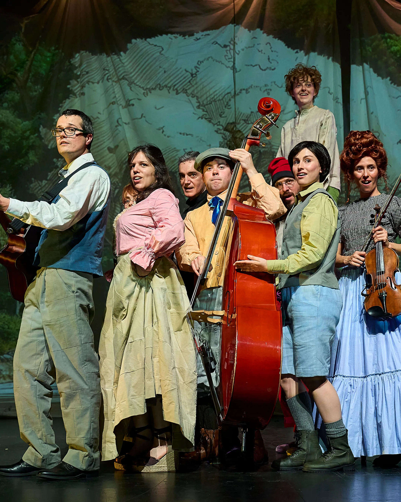
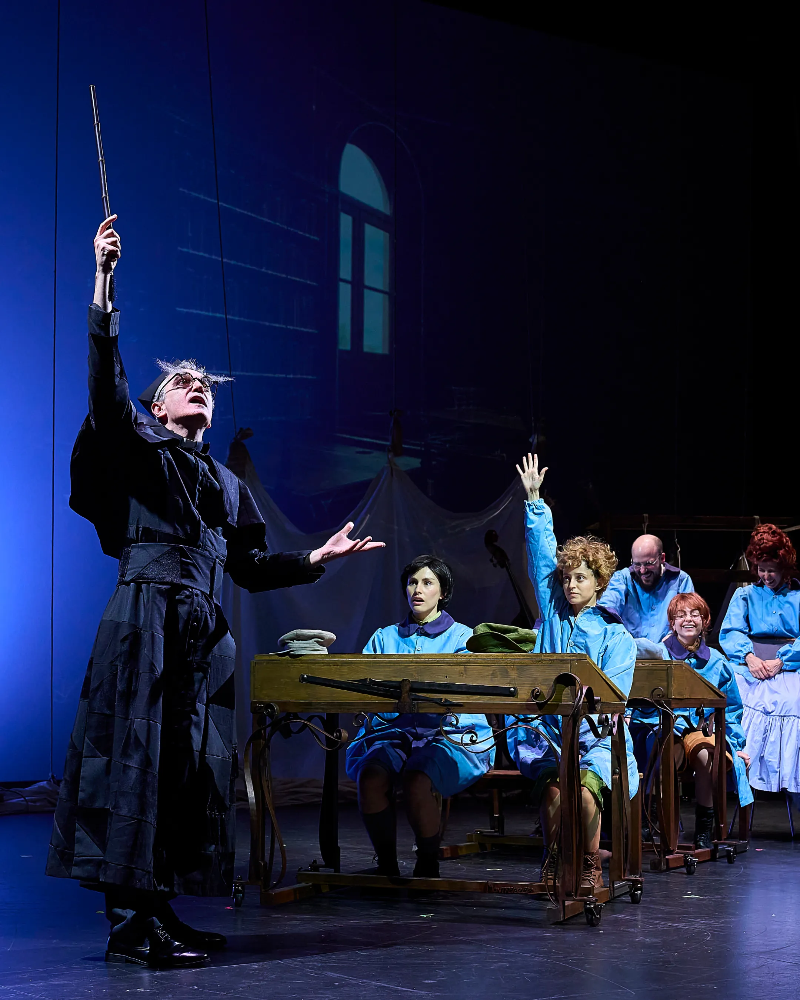
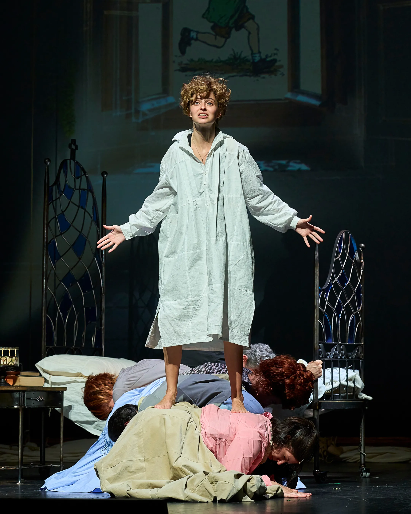
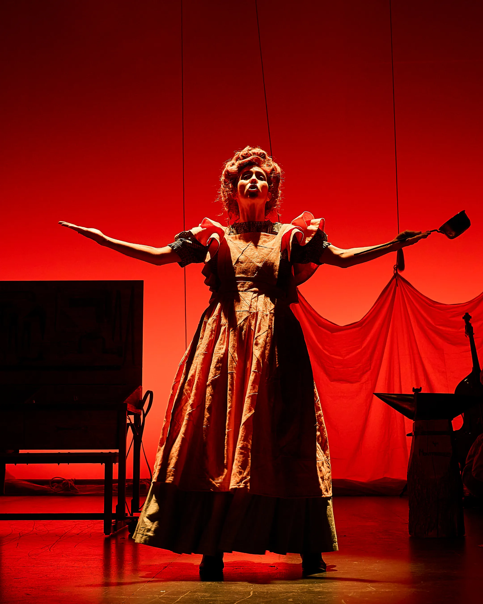
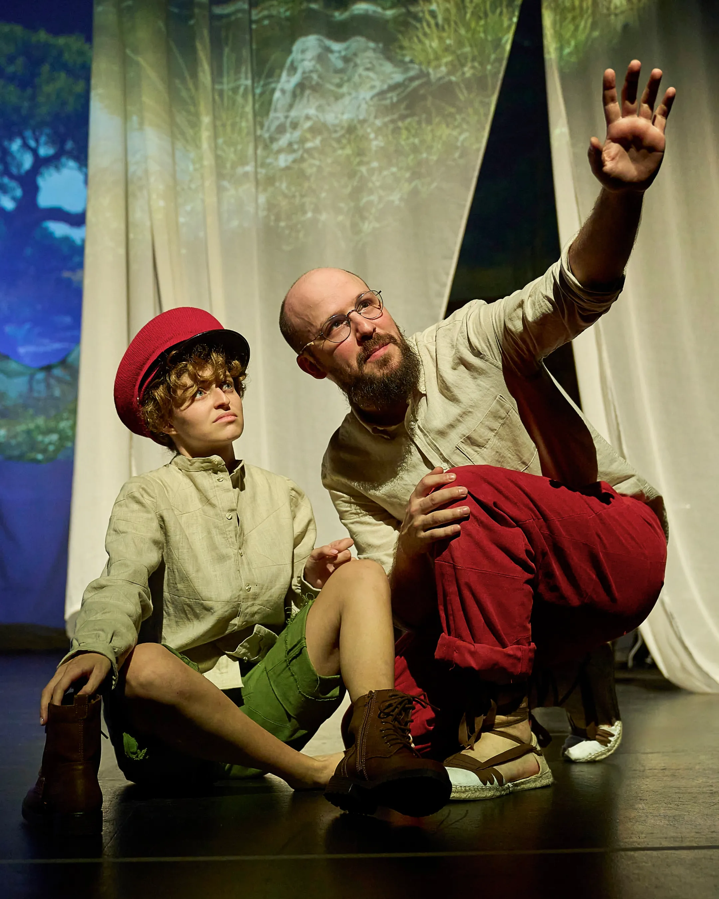
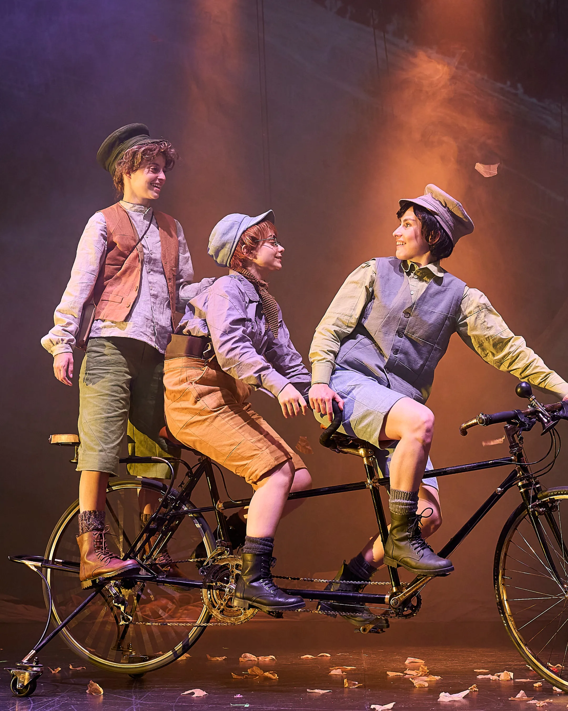
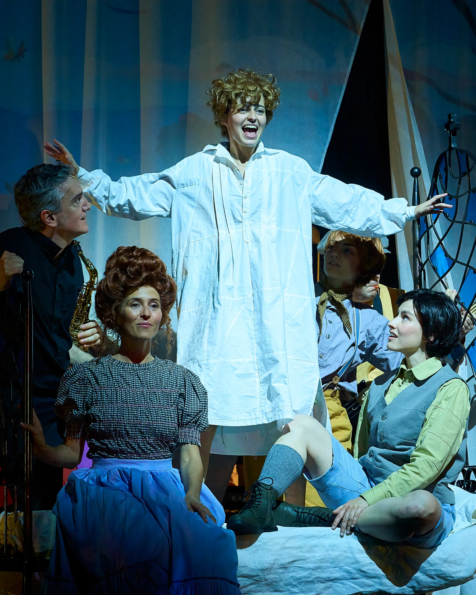
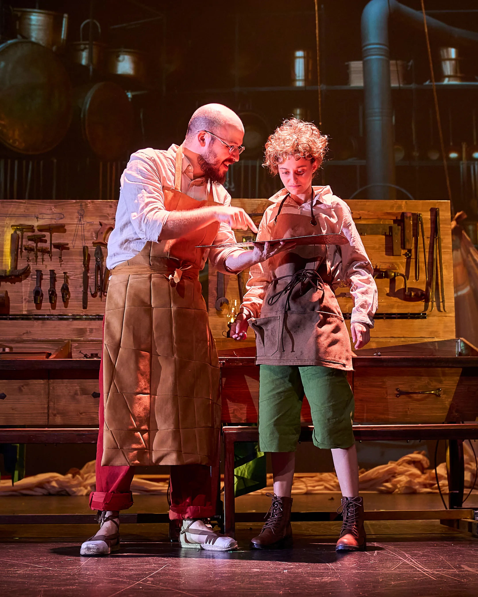

Un musical per viatjar a la infantesa de Gaudí
L'Espectacle
Una producció exclusiva de Trílope, co-creada amb Casa Batlló. L'any en què es commemora el centenari de la mort d'Antoni Gaudí, arriba un musical que ens convida a descobrir el nen que somiava transformar el món.
Amb fantasia, humor i tendresa, l'obra revela la seva lluita contra la malaltia, la connexió amb la natura com a font d'inspiració i el naixement d'un talent extraordinari: donar vida a allò que aparentment no en té.

"Com neix
la genialitat?"
L'espectacle en imatges









Fitxa tècnica
| Creació | Alfredo Ruiz i Cristina Estarelles |
| Direcció | Cristina Estarelles |
| Dir. Musical | Asier Olabarrieta |
| Producció | Trílope Productions |
| Co-creació | Casa Batlló |
| Suport | ICEC · Generalitat de Catalunya |
| Fotografia | David Ruano |
| Idioma |
Català
Musical
Familiar
|
| Preestrena | 26 juny 2026 · 19h · Teatre Fortuny, Reus |
| Temporada | Novembre 2026 – Gener 2027 |
| Teatre BCN | Teatre Poliorama, Barcelona |
| Intèrprets | 10 actors i músics de l'escena catalana |
| Veus | 8 cantants · 100% en directe |
| Veu en off | Lluís Soler |
| Durada | ~75 minuts · Sense entreacte |
| Escenografia | Sarah Bernardy, Raúl Vilassis i Cristina Estarelles |
Un autèntic
trencadís sonor
Pop, rock, clàssica i tradicional
Mashups de Led Zeppelin, Mozart, Eminem, The Police i cançons tradicionals catalanes en una mateixa partitura
8 veus en directe
Tots els cantants actuen sobre l'escenari. Sense playback, mai. Música viva en cada funció
Dir. Musical: Asier Olabarrieta
Arranjaments i composicions originals que reflecteixen l'univers gaudinià: la natura, la creativitat i la superació
Playlist oficial de Spotify
Substitueix aquest bloc amb l'iframe real de Spotify
Reserva la teva data
Les entrades ja estan a la venda al Teatre Poliorama.
26 juny 2026
📍 Teatre Fortuny, Reus
19:00 h · Any Gaudí 2026
Nov 2026 – Gen 2027
📍 Teatre Poliorama, Barcelona
La Rambla, 115
Cap de setmana
🕛 Dissabtes i diumenges
Sessions matinals · Familiar
Dies laborables
🎒 Grups escolars
Sessions matinals · Reserva prèvia
Patrocinadors & col·laboradors
Un projecte cultural únic, amb el suport d'institucions i marques que creuen en la cultura catalana.
Casa Batlló
Co-creació i patrocinador principal
ICEC
Institut Català de les Empreses Culturals
Generalitat de Catalunya
Amb el suport de
Trílope
Producció executiva
Teatre Poliorama
Teatre de l'espectacle · Barcelona
Teatre Fortuny
Teatre de l'estrena · Reus
Àrea de Premsa
Recursos gràfics i informació detallada per a mitjans de comunicació.
Viu l'experiència Gaudí
Preestrena al Teatre Fortuny de Reus el 26 de juny. Temporada al Teatre Poliorama de Barcelona de novembre 2026 a gener 2027.
Teatre Poliorama · La Rambla, 115 · Barcelona · Nov 2026 – Gen 2027